الدليل الشامل لغسيل السجاد وتعقيمه بالبخار في الرياض
يُعد تنظيف السجاد بالرياض من الخدمات الأساسية التي تحتاج إليها المنازل والفلل والشركات والمساجد والاستراحات في مدينة الرياض، وذلك بسبب طبيعة المناخ الصحراوي الذي يؤدي إلى تراكم الأتربة والغبار داخل ألياف السجاد بصورة مستمرة. ورغم أن تنظيف السجاد بشكل سطحي قد يمنحه مظهرًا أفضل، إلا أن الأوساخ الدقيقة والغبار وبقايا الاستخدام اليومي قد تستقر في أعماق الألياف، وهو ما يجعل التنظيف الاحترافي خطوة مهمة للحفاظ على نظافة السجاد وجودته وإطالة عمره الافتراضي.
يُعتبر السجاد من أكثر العناصر تعرضًا للاستخدام داخل المنزل، فهو يستقبل حركة الأشخاص يوميًا، وقد يتعرض لانسكاب المشروبات أو الطعام أو تراكم الغبار القادم من النوافذ والأبواب. ومع مرور الوقت، تبدأ الأوساخ بالتراكم داخل الألياف، مما قد يؤدي إلى: تغير لون السجاد، ظهور بقع واضحة، تراكم الغبار بين الألياف، انبعاث روائح غير مرغوبة، انخفاض المظهر الجمالي للسجاد، تقليل العمر الافتراضي للسجادة.
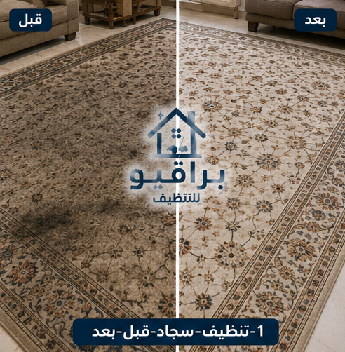
قبل وبعد التنظيف
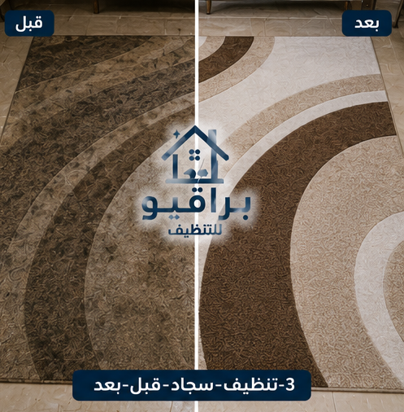
قبل وبعد التنظيف
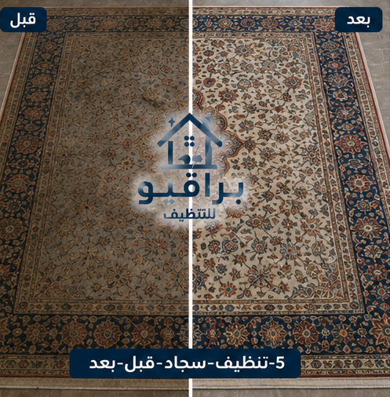
قبل وبعد التنظيف
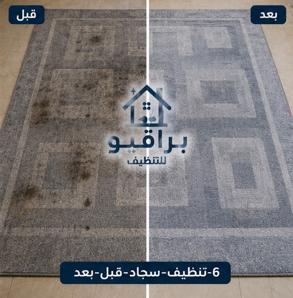
قبل وبعد التنظيف
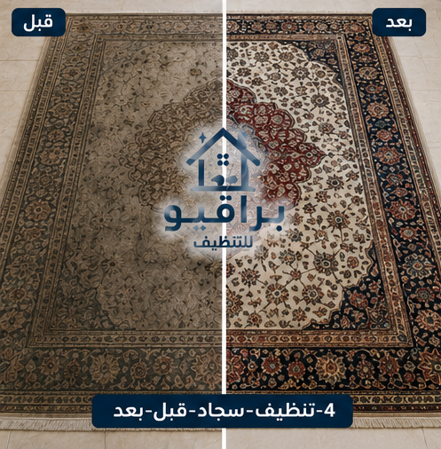
قبل وبعد التنظيف
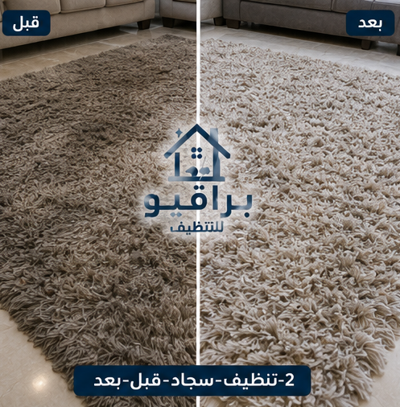
قبل وبعد التنظيف
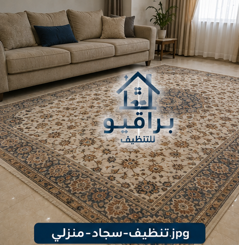
تنظيف السجاد المنزلي
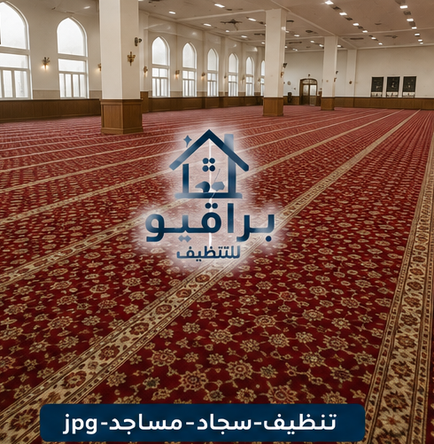
تنظيف سجاد المساجد
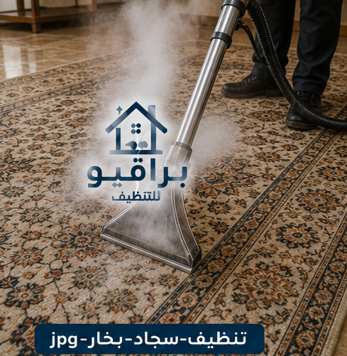
التنظيف بالبخار
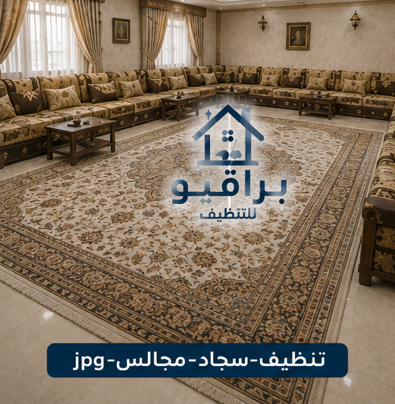
تنظيف سجاد المجالس
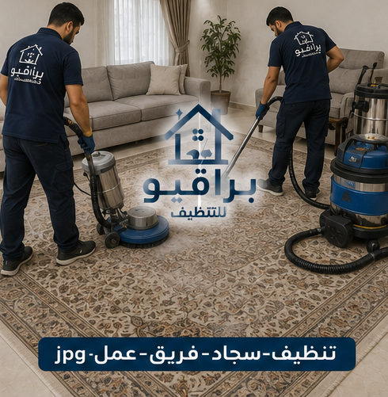
فريق العمل
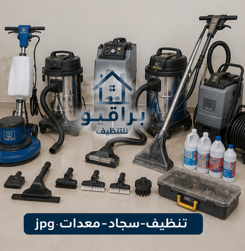
المعدات
قد تبدو عملية تنظيف السجاد سهلة، لكنها تحتاج إلى معرفة نوع السجاد، وطبيعة الألياف، والطريقة المناسبة للتنظيف، حتى لا تتأثر الألوان أو تتعرض الخامات للتلف. ولهذا فإن الاستعانة بـ شركة تنظيف سجاد بالرياض تمنحك العديد من المزايا، مثل: تنظيف احترافي، التعامل مع مختلف أنواع السجاد، إزالة الأوساخ بطرق مناسبة، المحافظة على الألوان، استخدام معدات حديثة، استخدام مواد تنظيف آمنة، إنجاز العمل بكفاءة، توفير الوقت والجهد.
تختلف طرق تنظيف السجاد حسب نوع الخامة: السجاد الصوفي، السجاد الحريري، السجاد الصناعي، السجاد القطني، الموكيت.
يُعد تنظيف السجاد بالبخار بالرياض من أكثر الطرق انتشارًا، لأنه يساعد على تنظيف ألياف السجاد بعمق، مع المحافظة على خامة السجاد عند استخدام الطريقة المناسبة لكل نوع. ومن أهم مزاياه: تنظيف عميق، المساعدة في إزالة الغبار، المساعدة في إزالة الروائح، الحفاظ على مظهر السجاد، تنظيف معظم أنواع السجاد بطريقة فعالة.
يفضل الكثير من العملاء تنظيف السجاد داخل المنزل لتوفير الوقت والجهد، خاصة إذا كان السجاد كبير الحجم أو يصعب نقله. ويتم تنفيذ الخدمة مع مراعاة نوع السجاد وطريقة التنظيف المناسبة، مع الحرص على ترك المكان مرتبًا بعد الانتهاء.
تتميز الفلل عادةً بوجود عدد كبير من السجاد في المجالس وغرف المعيشة وغرف الضيوف، ولذلك تحتاج إلى خطة تنظيف متكاملة تضمن الاهتمام بكل قطعة على حدة.
يساعد السجاد النظيف في إعطاء انطباع احترافي عن الشركة أو المكتب، لذلك تشمل الخدمة: تنظيف سجاد المكاتب، تنظيف صالات الاستقبال، تنظيف غرف الاجتماعات، تنظيف الممرات المفروشة بالموكيت، إزالة البقع، إزالة الغبار.
تتميز مدينة الرياض بالمناخ الصحراوي، ولذلك تتعرض المنازل والفلل لدخول كميات من الأتربة الدقيقة مع فتح النوافذ أو أثناء الدخول والخروج اليومي. وقد لا تكون هذه الأتربة ظاهرة في البداية، لكنها تستقر تدريجيًا داخل ألياف السجاد، مما يؤثر في مظهره مع مرور الوقت.
يحتاج سجاد المساجد إلى عناية خاصة نظرًا لكثرة الاستخدام اليومي. تشمل الخدمة: إزالة الأتربة، تنظيف الألياف، إزالة البقع، تعقيم السجاد عند الحاجة، الحفاظ على مظهر السجاد وجودته.
تختلف أنواع البقع وطرق التعامل معها، ومن أشهرها: بقع القهوة، الشاي، العصائر، الطعام، الحبر، الطلاء الخفيفة، آثار الاستخدام اليومي. ويتم اختيار طريقة التنظيف المناسبة وفق نوع السجادة وطبيعة البقعة.
تقدم براقيو خدمات تنظيف السجاد بالرياض لجميع العملاء في مختلف أحياء العاصمة: حي النرجس، حي الياسمين، حي الملقا، حي العارض، حي حطين، حي الصحافة، حي الربيع، حي الملك فهد، حي العليا، حي السليمانية، حي قرطبة، حي المونسية، حي الرمال، حي القادسية، حي اليرموك، حي الروضة، حي الخليج، حي النسيم، حي الشفا، حي السويدي، حي بدر، حي العزيزية، حي ظهرة لبن، حي الدار البيضاء.
يحتاج الموكيت إلى عناية مختلفة عن السجاد المنفصل، لأنه يغطي مساحة الأرضية بالكامل. تشمل الخدمة: تنظيف الموكيت في المنازل، تنظيف موكيت المكاتب، تنظيف موكيت الفنادق، تنظيف موكيت الشركات، إزالة البقع، إزالة الغبار، تنظيف الحواف والزوايا.
نعم، مع اختيار الطريقة المناسبة لكل نوع وخامة.
يفضل إجراء تنظيف احترافي كل 6 إلى 12 شهرًا، مع زيادة عدد مرات التنظيف في الأماكن كثيرة الاستخدام.
نعم، مع استخدام طرق ومواد مناسبة تحافظ على جودة السجاد.
يساعد التنظيف العميق في التخلص من أسباب الكثير من الروائح المرتبطة بالأوساخ المتراكمة.
عمالة محترفة ومدربة على أعلى مستوى
منتجات تنظيف مناسبة لجميع أنواع السجاد
خدمة سريعة مع الالتزام بالمواعيد
نتائج احترافية تدوم طويلاً
إذا كنت تبحث عن أفضل شركة تنظيف سجاد بالرياض تقدم جودة عالية، واهتمامًا بالتفاصيل، وخدمة احترافية تناسب المنازل والفلل والشركات، فإن براقيو توفر حلولًا متكاملة للعناية بجميع أنواع السجاد والموكيت. نؤمن بأن السجاد النظيف يضيف لمسة من الأناقة والراحة إلى أي مكان، لذلك نهتم بكل مرحلة من مراحل العمل، بداية من تقييم حالة السجاد، واختيار الطريقة المناسبة للتنظيف، ومعالجة البقع، والعناية بالألياف، والمساعدة في إزالة الروائح، وصولًا إلى التجفيف بالطريقة المناسبة للحفاظ على جودة السجاد.
الحفاظ على نظافة السجاد ليس مجرد اهتمام بالمظهر، بل هو جزء من العناية بالمنزل وراحة أفراد الأسرة. ومع الاستخدام اليومي وتراكم الغبار والبقع، يصبح التنظيف الاحترافي وسيلة فعالة للمحافظة على جودة السجاد وإطالة عمره وتحسين المظهر العام للمكان. سواء كنت تحتاج إلى تنظيف سجاد منزل، أو فيلا، أو مكتب، أو شركة، أو فندق، أو مسجد، فإن فريق براقيو مستعد لتقديم خدمة احترافية تغطي جميع أحياء مدينة الرياض.
نقدم خدمة تنظيف المكيفات في جميع أحياء الرياض: حي النرجس، حي الياسمين، حي الملقا، حي العارض، حي حطين، حي الصحافة، حي الربيع، حي الغدير، حي العقيق، حي المروج، حي الورود، حي النفل، حي الندى، حي الفلاح، حي التعاون، حي الازدهار، حي قرطبة، حي الرمال، حي المونسية، حي القادسية، حي اليرموك، حي الخليج، حي الروضة، حي إشبيلية، حي الجزيرة، حي النهضة، حي الحمراء، حي غرناطة، حي الريان، حي الربوة، حي القدس، حي الروابي، حي السويدي، حي ظهرة لبن، حي لبن، حي طويق، حي العريجاء، حي البديعة، حي شبرا، حي سلطانة، حي الشفا، حي بدر، حي العزيزية، حي الدار البيضاء، حي المنصور، حي الحزم، حي نمار، حي أحد، حي عكاظ، حي المروة، حي العليا، حي السليمانية، حي الملز، حي الفوطة، حي المربع، حي البطحاء، حي الديرة، حي السفارات.